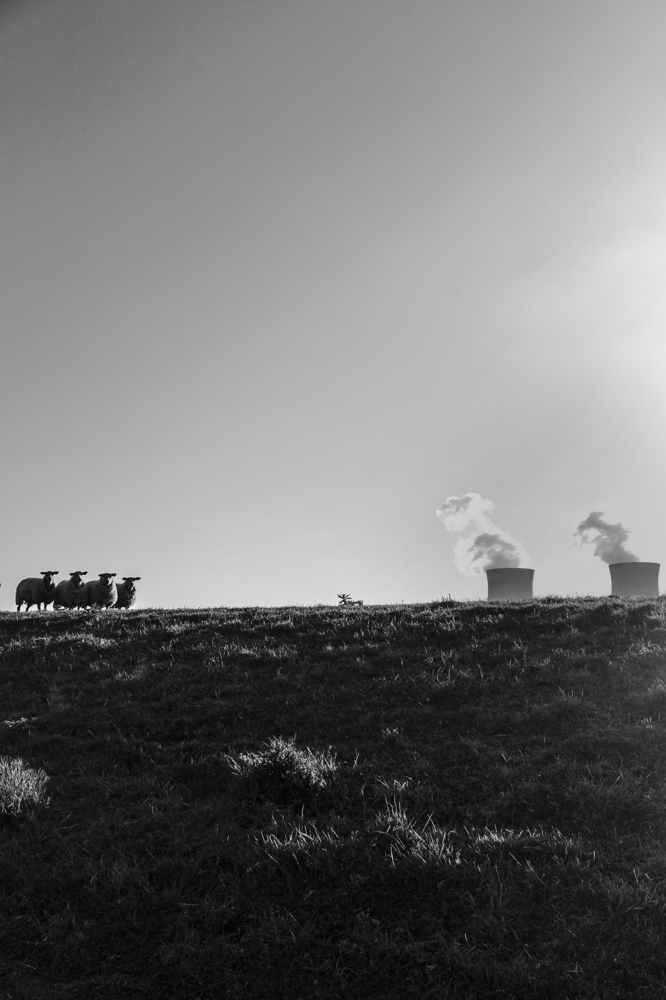

Door het tijdperk waar we inleven is er veel mogelijk, vooral om dingen te traceren en terug te vinden. Een van de grootste boosdoeners is de GSM dit was ook het geval bij de 2. Toen Haveman werd gevonden, wisten we niet waar we moesten aan beginnen. We begonnen als eerste met het bedrijf te checken, alles leek inorde tot we zagen dat er een plotselinge verandering was gebeurd binnen het bedrijf. Opeens kreeg Manuel 80% van de aandelen als Haveman zou overlijden, dit was een zeer grote tip voor ons. Door gebruik te maken van Sms’en en getuigenissen hebben we een heel netwerk kunnen traceren en dit was een heel succesvolle buit. Manuel heeft een straf gekregen van 20 jaar, en Saybolt is stopgezet omdat het onmogelijk was om hier nog iets uit te halen.
